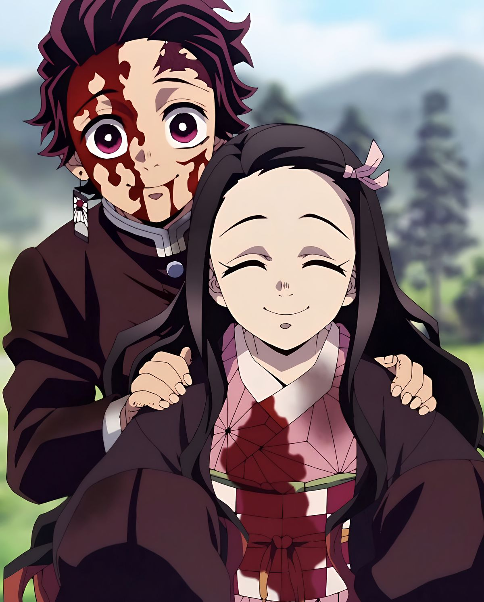

The Story

Tanjiro's Quest & The Tragedy
During Japan's Taisho Era, Tanjiro Kamado lives a humble, peaceful life high in the snowy mountains as a charcoal seller supporting his family. His world shatters in a single afternoon when he returns home to discover his entire family brutally slaughtered by Muzan Kibutsuji, the progenitor of all demons.
His younger sister, Nezuko Kamado, is the sole survivor—but her blood has been infected by Muzan, turning her into a flesh-craving demon. Refusing to abandon her, Tanjiro discovers that Nezuko still retains human empathy, fighting off her demon instincts to protect her brother.
Guided by the Water Hashira Giyu Tomioka, Tanjiro undertakes two years of grueling training under Sakonji Urokodaki to master Water Breathing. He joins the secret Demon Slayer Corps with two ultimate goals: finding a cure to make Nezuko human again, and eradicating Muzan once and for all.